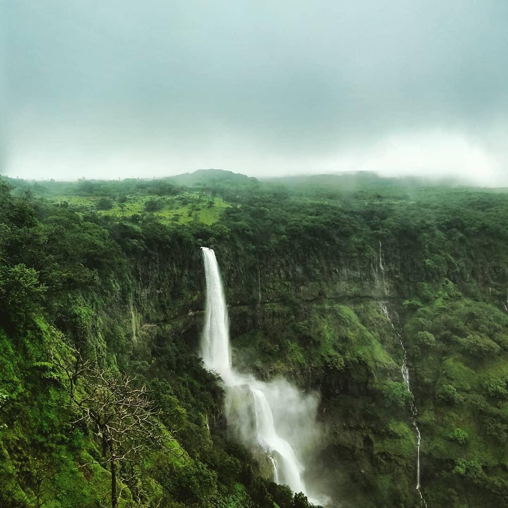
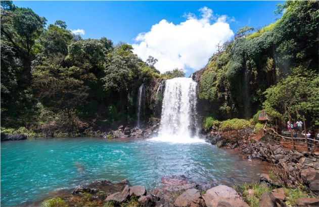
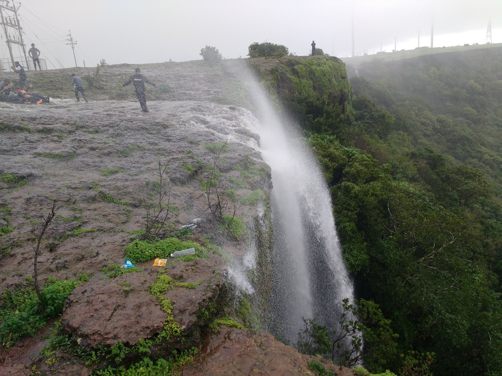
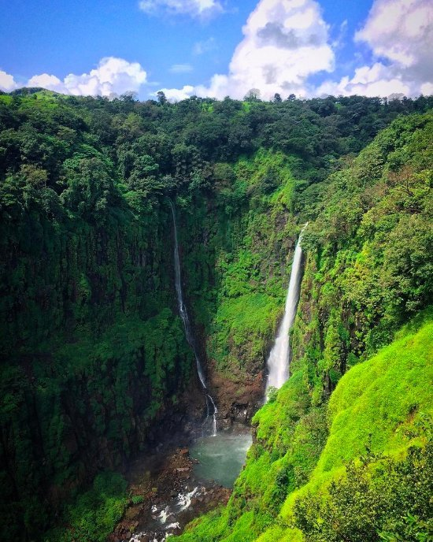
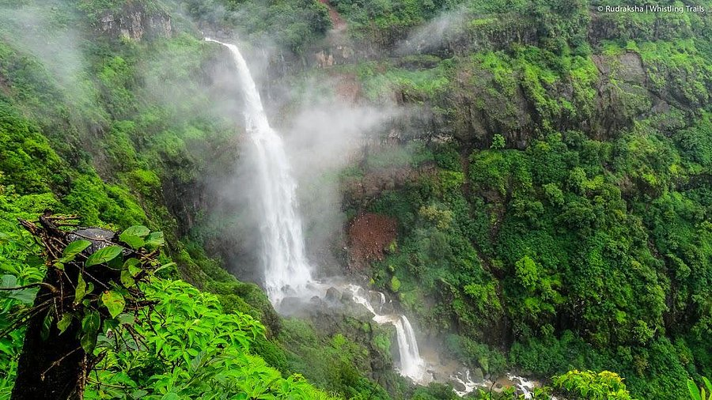
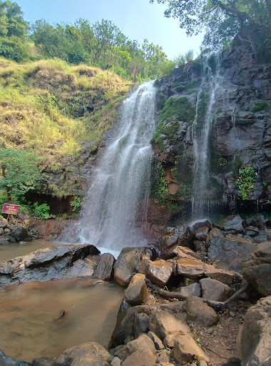

A three-tiered waterfall known for its impressive height and scenery.a spectacular three-tired
waterfall on the Urmodi River,near the Kaas plateau(Valley of flowers).it's one of the tallest
waterfall in Maharashtra,with a total drop of around 853 ft(260 m).
Distance:~28-30 km
Best time:Monsoon-full flow and lively surroundings
july to september
Location:Near Bambavli village,satara
around 25-30 km from satara city

Thoseghar waterfall is one the most famous and scenic waterfall in satara.it is located
near Thoseghar village,about 25 km from satara city.The waterfall consists of multiple
cascades,with some falling from a great height.
The area around Thoseghar is developed with viewpoints,railings,and walking paths,making it
safe an comfortable for tourist.
Best time to visit:july to september
How to reach:Drive by road via satara->Gajawadi->Thoseghar.
Local autos/taxis are available from Satara.


Kelavali waterfall is a lesser-known but beautiful waterfall located near kelavali village
in satara.it is surrounded by forests,hills,and farmland,offering a quiet and natural experience
away from crowded tourist places.locals enjoy the greenery and water flow especially after good
rainfall.
Location:Kelavali,satara,Maharashtra 415013
How to reach:Driving from satara via lical roads toward the thoseghar route.Best visited
with locals or directions.
best time to visit:Monsoon to early post-monsoon(july-october)

Lingmla waterfall is one of the most popular tourist attractions in mahabaleshwar,satara.
the waterfall flows from the Venna River and splits in to a small waterfall(Lingmala mini)
and a large waterfall,both offering beautiful views.the place is well-maintained with viewpoints
pathways,and safety railings,making it suitable for families and senior citizens.the view
of water falling into a deep valley,surrounded by dense forest,is truly breathtaking.
Best time to visit:Monsoon
6 km from mahabaleshwar town by road.

Munawale waterfall is a scenic spot in Maharashtra satara district,near Tapola,known
for its natural beauty and as a base for exploring Vasota fort. its a popular attraction
for trekkers and nature lovers,offering stunning views,especially during monsoon,often
accessed via lakeside camping experience around vasota lake.
location:Munawale village,Satara district
Near by attraction:vasota fort,kaas plateau,Thoseghar waterfall
Best time to visit:Monsoon season
